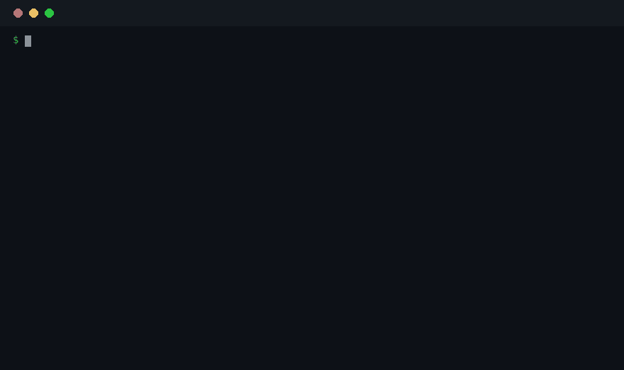

Steered, not slop.
A local receipt that shows how much a human actually steered the AI that made this, so the reader knows how hard to review it.
AI-produced pull requests and documents now arrive faster than anyone can read them. From the outside, a one-prompt artifact and a carefully steered one look exactly the same. The reviewer has one question, how much human judgment is in this, and the artifact itself gives no answer. So reviewers burn deep attention on work nobody steered, and careful work gets dismissed as slop because it wears the same uniform.
The tools that promise an answer measure authorship, what share of the lines an AI typed. That is the wrong question. In the real sessions in this repo, line authorship is 100% agent-typed in the steered session and 100% agent-typed in the one-prompt control. The agent types nearly everything either way. What differs is the steering, and authorship tools cannot see it at all.
Do not ask who typed it. Ask who was driving.
proof-of-steer joins the record of the session to the history of the artifact and counts what observably happened. How many genuine human turns there were. How much of the shipped artifact arrived only after the first prompt. Which parts were reshaped in later revisions, and where the corrections landed. It prints those counts as a receipt the creator can attach to the work.
Three properties are the design, not features. It is sender-side and voluntary, generated by the person who did the work, like signing a commit. It is local, so the transcript never leaves the machine it happened on. And it is never a grade. A receipt is descriptive evidence a person can weigh, not a certified score.
Replay the session. The transcript is replayed turn by turn, with injected system records filtered out, so each genuine human prompt becomes one segment.
Join it to the artifact. Every line of the final artifact is traced back to the segment that introduced it. For documents, each later revision is traced the same way.
Cross-check and print. The replay is rebuilt as a local git repo and git blame independently verifies the provenance before the receipt is written.
86.4% of shipped lines arrived after the first prompt
The sample steered session ran 40 human turns, 12 of them correction prompts, and shipped 21 files with 2,907 lines. The one-prompt control shipped a similar sized artifact with 1 turn and a post-first share of 0.0%. Authorship calls both of them identical. The receipt does not.
Claude Code transcripts and Codex rollouts are both supported, and the format is detected automatically.
36.0% of the final text is unchanged from version one, and that is a floor
The sample is a research findings draft with 3 revisions and 242 lines in its final version. The per-section map tells the story the average cannot. The phase one sections are 100% first draft. One whole section first appears in revision 2. Every phase two section arrives in revision 3.
Doc mode walks the committed revisions of any document in git and maps each section the same way.
Code receipts also count the moments the agent stopped and asked. Each structured question the user answered is classified by what the user did with the choice: followed the option the agent marked recommended, picked a different listed option, answered in free text, or refused the question as posed. Errored and unparseable calls are printed as coverage alongside, never folded into the counts.
One honesty rule travels with these numbers. Agents mark a recommended option inconsistently, so every count is printed next to how many questions carried a mark at all, and the followed count is read against that marked subset only. The steering mark does not use these fields. They describe what happened at the forks of the session, and a session where the agent never asked reads zero, which says nothing about steering through ordinary turns.
The Steerprint is the receipt drawn as a map, and it is made to be shared. For a code session it draws one block per human turn, sized by the lines that turn introduced, colored by kind, and hatched where those lines were later discarded. For a document it draws one bar per section, split between the first draft and what later revisions introduced.
Read the sample like a reviewer. On the left, a steered session is a skyline of forty blocks in four colors. On the right, the one-prompt control is a single block, because nothing arrived after the first draft. Below, the findings draft shows its sections, the all-blue ones never touched again and the warm ones carrying judgment applied later.
When even the map is more than the moment allows, every receipt also carries a steering mark, one of four words: One-shot, Prompted, Steered, or Closely steered. The mark is the glanceable form of the receipt, the map in a single word. For code it is defined on measured reshaping, how many turns went back and changed earlier work. For documents it reads how the later revisions treated the first version. It names the shape of the process, not a grade: it says nothing about quality, and one-shot work can be exactly right.
Open the sample Steerprint and hover or tap any block for its numbers.
Maintainers can ask for the receipt where the habit forms, in the pull request template. The repo ships a short section to paste in, examples/pull-request-template.md: contributors who used an agent fill in their steering mark and attach the receipt, and everyone else deletes the section. This repo's own pull request template carries the same section.
Requirements are Python 3.8 or later, standard library only, and git on the path. Nothing is uploaded anywhere, and there is nothing to sign up for.
Run it without installing anything, if you have uv:
uvx proof-of-steer code path/to/session.jsonl --label my-sessionOr install it:
pipx install proof-of-steer
# or: pip install proof-of-steerOr run it from a clone of the repo, where the commands below use python3 steering_receipt.py in place of proof-of-steer, and python3 steering_viz.py in place of steerprint. The two forms are the same tool.
proof-of-steer demoThe demo runs the full pipeline on a small synthetic session that ships with the tool and writes a receipt, a badge, and a Steerprint map into demo-out. It is the thirty-second try, no transcript of your own needed.

python3 steering_receipt.py code path/to/session.jsonl --label my-sessionAdd --repo to seed the starting content of files the session edited but never created, so more of its edits can be replayed. If the repo has moved on since the session ran, seed from the commit the session ran against.
python3 steering_receipt.py code path/to/session.jsonl --label my-session --repo path/to/repo
python3 steering_receipt.py code path/to/session.jsonl --label my-session --repo path/to/repo --repo-ref <commit>Output lands in receipts-out/ as a receipt JSON plus a rendered STEERING.md. Draw any receipt as a Steerprint with:
python3 steering_viz.py my-session.receipt.json -o steerprint.htmlRun either mode with --commitment to bind the receipt to its source material with SHA-256 hashes, and draw the steering mark alone as a badge with python3 steering_viz.py my-session.receipt.json --badge -o badge.svg.
python3 steering_receipt.py doc path/to/repo docs/plan.md --label planThe repo ships a Claude Code plugin under plugins/claude-code. Its SessionEnd hook runs the receipt at the end of a session and writes it into a .steering folder in the project. A /steering command regenerates it on demand.
The field set was not asserted. It was tested, and some of it failed and got demoted. That is the point of this table.
| Corpus | What was tested | Result |
|---|---|---|
| trace-commons, 28 Claude Code sessions | Full transcript to git join, with replay provenance checked against git blame |
Blame agreement 99.5 to 100%. Steered sessions separate from one-prompt controls on the headline field, with batch medians of 0.0% for sessions of 2 turns or fewer and 77.2% for 10 or more. |
| SWE-chat (SALT-NLP), 17,968 sessions | Published steering statistics reproduced at scale | Steering presence validated, dose not. One-prompt sessions sit at 0.0, continued sessions near 0.75, and pushback sessions near 0.97, and the value saturates. Published survival was not reproduced, so survival stays a context field, stratified by agent. |
| CoAuthor, 1,447 writing sessions (CHI 2022) | Doc mode against keystroke-level ground truth, scored with the keystrokes hidden | Per-part labels validated, with 88.3% sentence-level agreement and a false-untouched rate of about 0.05%. The headline percentage is a floor, not a dose. |
The validated scope travels with the evidence. It is printed on every receipt in its validation_scope field.
A session transcript is radioactive. It holds your code, your other projects, your half-formed thinking, and whatever you pasted at 1am. You could share it to prove you steered, the same way you could prove your identity by handing over your private key. Nobody sane does either.
proof-of-steer is private by construction, not by policy. Everything runs on your machine and nothing is uploaded anywhere. The receipt is derived from the private material and is safe to publish for the same reason a public key is. It carries counts, categories, file names, and line attributions, and never prompt text, tool arguments, or file contents. Anyone can check every claim on it without seeing the session it came from, and sharing is per artifact and sender-controlled. Publish a receipt for one pull request and everything else stays private.
One honest break in the analogy. A public key is unforgeable and a receipt is not. It is evidence, not a cryptographic proof, and a determined faker can manufacture one. Part of that gap closes with the --commitment flag: the receipt then carries SHA-256 hashes of the exact transcript and repo state it was derived from, computed at generation time. Commit now, reveal only if challenged. If a claim is ever disputed, the sender reveals the material and anyone can verify the receipt was honestly derived from it rather than written after the fact.
harness field, and context fields should only be compared within one harness.